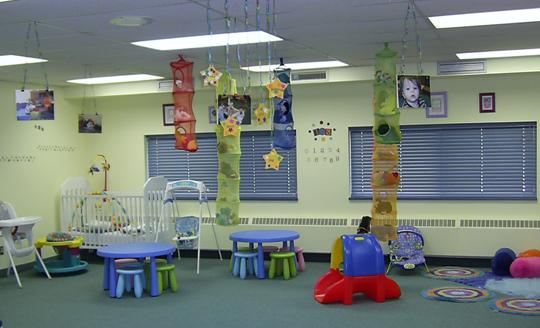

|
Worship Service Led by: Majors Lloyd & Ellen Boone
Sunday mornings at 11am Please join us!! To read previous Bible messages, please click here Nursery Coordinator: Tracy Burt |

|
|
Children ages 0-3 are lovingly cared for during the morning service. Supervised playtime along with crafts and snacks while the parents enjoy their worship time.
We use a silent pager system so that each parent receives a pager when they drop off their child so they can be paged in case they are needed. Junior Church Coordinator: Joanne Gill Children ages 4-10 enjoy a Bible time geared for them including a variety of topics geared for their age level, incorporating a Bible lesson and reinforced with games and a craft. |
|
25 Centre Ave North York, ON M1H 2C3 |
Phone: 416-225-7968 e-mail: corps@northyorktemple.ca |